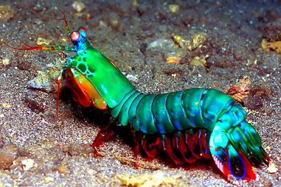

Fatos sobre o Stomatopoda
SUPERVISÃO!
O Stomatopoda tem 16 cones cores-receptivos, sendo o animal que consegue enxergar mais cores no mundo.
CRIATIVAMENTE PERIGOSO!
Este "animalzinho" é capaz de desferir um dos mais rápidos e violentos golpes do reino animal, um soco que pode apresentar a velocidade de um tiro calibre .22 (equivalente a 720km/h) e uma força de impacto de 60 kg/cm². Essa força esmagadora é a responsável pelo seu título de "lagosta-boxeadora" e é capaz de facilmente quebrar a carapaça de um caranguejo, as conchas duras e calcificadas de gastrópodes ou até mesmo quebrar o vidro reforçado de um aquário.